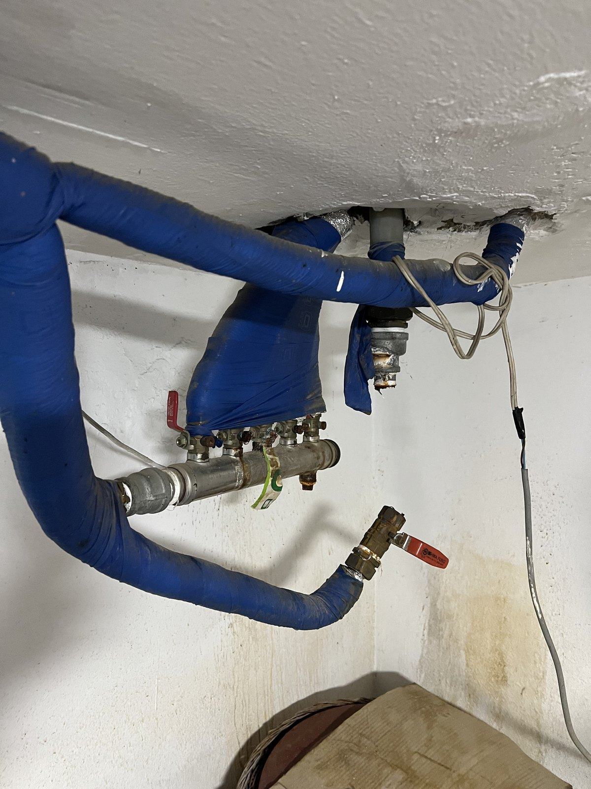
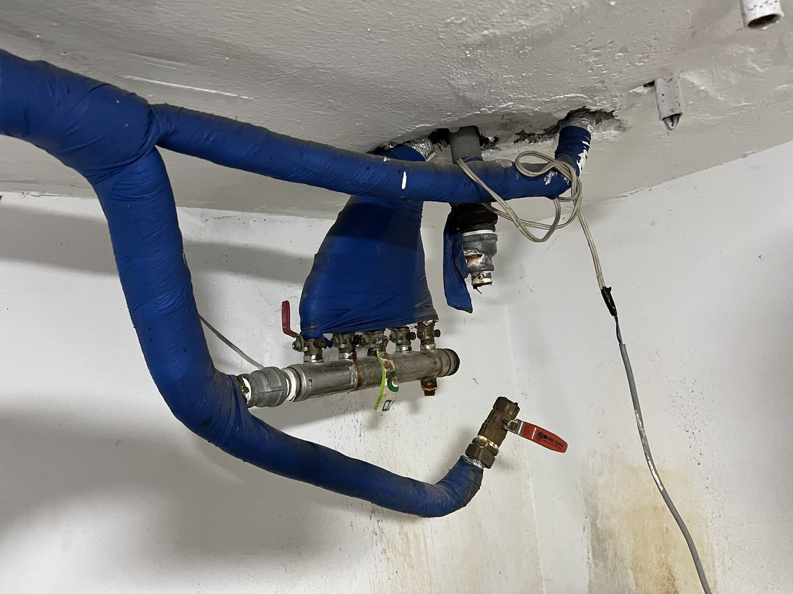
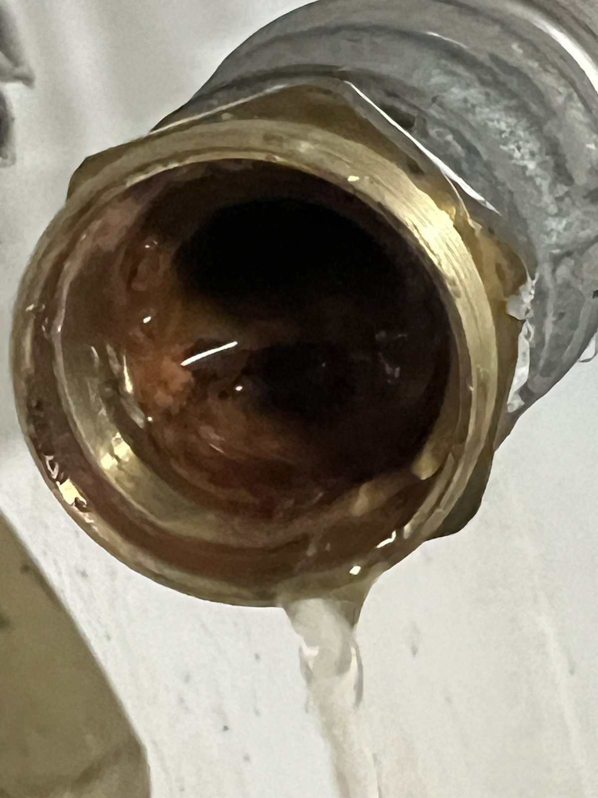
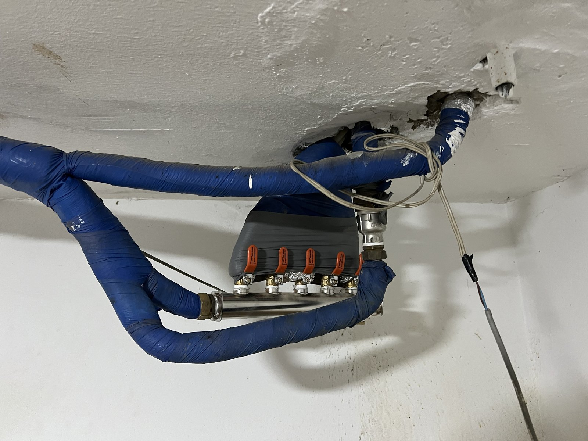
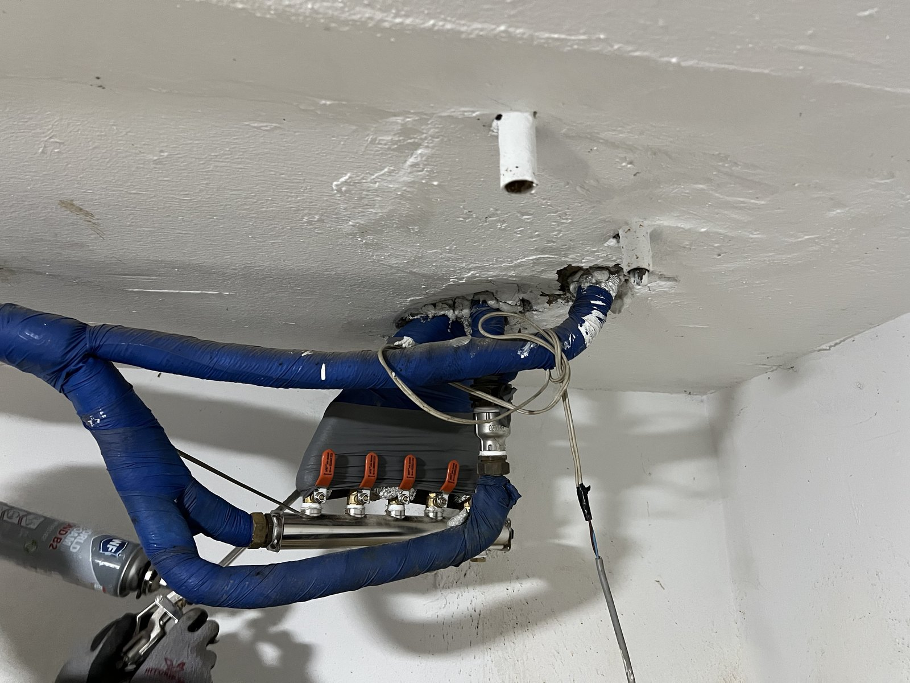

대전 중구 문창동 난방 분배기·밸브 교체｜분리부터 보온 마감까지

작업 핵심
현장 작업 한눈에 보기
- 현장
- 대전 중구 문창동 · 천장 쪽 난방 분배기
- 문제
- 보일러 난방수 부족 표시
기존 분배기 아래 벽의 물 자국 - 작업
- 기존 분배기 분리·고인 물 빼기
새 분배기·밸브 설치·보온재 다시 감기 - 결과
- 새 분배기와 보온 마감 사진 확인
압력시험 수치·소요시간은 미기재
대전 중구 문창동 현장입니다. 보일러에 난방수 부족 표시가 뜬다는 연락을 받고, 천장 쪽 기존 난방 분배기를 떼어 낸 뒤 새 분배기와 밸브를 달고 보온재를 다시 감았습니다. 실제 사진 6장으로 소개합니다.
1. 작업 전 천장 쪽 분배기
대전 중구 문창동 현장 작업입니다. 2026년 11월 12일 오후 사진을 순서대로 소개합니다.
보일러에 난방수 부족 표시가 뜬다는 연락을 받고 천장 쪽 난방 분배기를 확인했습니다. 파란 보온재로 감싼 배관 아래에 기존 분배기가 달려 있었습니다.

2. 분배기 아래 벽의 물 자국
조금 떨어져서 본 모습입니다. 분배기 아래 벽에 물이 흘러내린 듯한 자국이 남아 있었습니다. 이 자국만으로 새는 자리를 단정하지는 않았습니다.

3. 기존 분배기 떼어 내기
기존 분배기를 떼어 내자 연결부에서 안에 고여 있던 물이 흘러나왔습니다.

4. 새 분배기와 밸브 연결
새 분배기를 달고 방마다 이어지는 배관에 밸브를 하나씩 연결했습니다. 분배기 끝부분은 금속 주름관으로 이었습니다.
5. 보온재 다시 감기
연결을 마친 분배기와 배관을 보온재로 다시 감쌌습니다.

6. 마무리
마무리한 모습입니다. 1번 사진과 비교하면 분배기와 밸브가 새것으로 바뀌고, 둘레에 보온재가 다시 감겨 있습니다.

7. 확인한 범위와 상담 안내
이번 기록은 사진으로 확인되는 공정 범위입니다. 압력시험 수치와 총 작업시간은 자료가 없어 적지 않았습니다.
보일러에 물 보충 표시가 자주 뜨거나 분배기 주변에 물 자국이 보이면, 분배기 전체와 밸브, 아래 벽을 각각 찍어 상담해 주세요.